About Me
This is an archive of my portfolio that won me the 2023 Nebraska High School Journalist of the Year Award. For my most up to date portfolio go to diepjustin.github.io
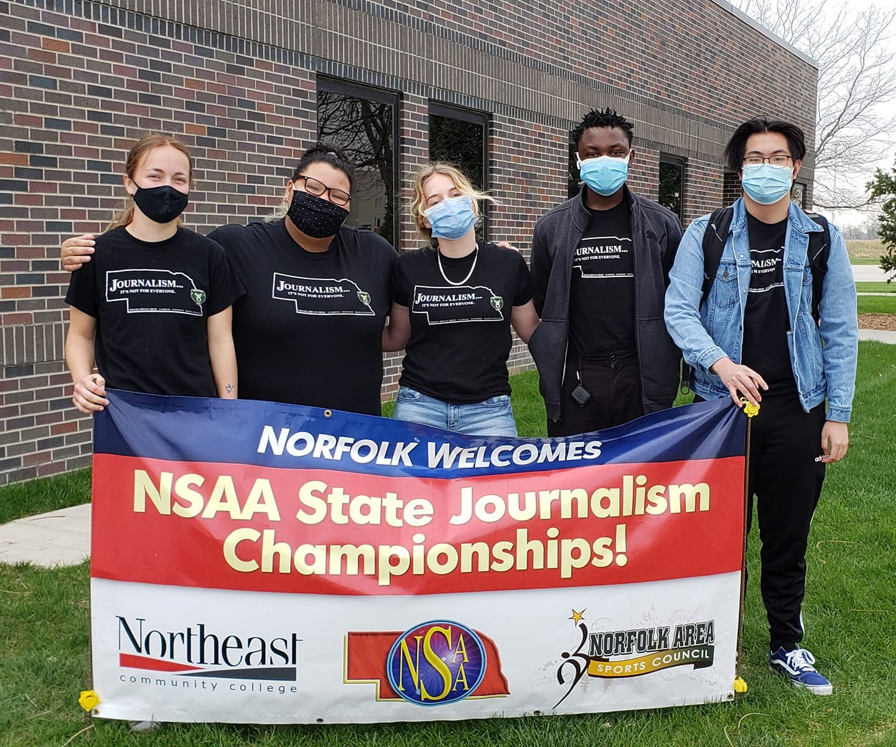
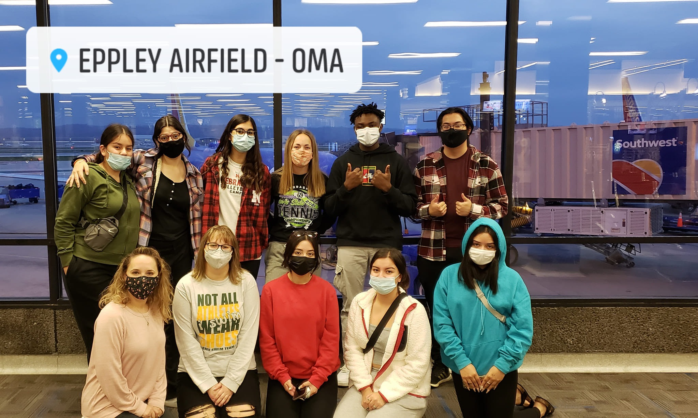
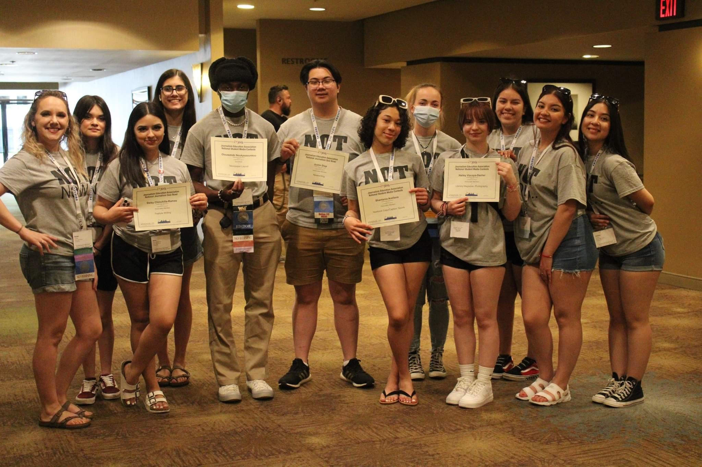
How I Got Here
My name is Justin Diep and I am in my third year on the staff of Omaha Bryan's The Orator Newspaper as Editor-in-Chief.
I was always a good writer. Throughout my time in school, teachers would praise my writing, but I wasn't sure what else I could do with it beyond writing essays for a grade.
Sitting in the library in 8th grade registering for classes, I picked Journalism 1-2 as an elective because it seemed interesting — little did I know then that taking that class would change the course of my high school career.
I started my involvement with the journalism publication as a volunteer photographer for The Crusader Yearbook. The yearbook staff needed cross-country photos, and as a student who excelled in the journalism class, teacher Ranae Duncan trusted me to take a camera out into the field to shoot photos that did end up in the yearbook.
Since that moment I fell in love with the program. Our assignments to write stories also cemented my desire to join one of the publications. I wasn't really sure at the time if I should join the yearbook or newspaper staff, but Duncan encouraged me to join the newspaper.
In early 2020 I wrote a column about city developments within Omaha and Duncan asked if I wanted it published in the newspaper. It felt great knowing that my work was worthy enough to be published.
Riding this high I asked if I could write about the potential impact COVID-19 would have if it reached Nebraska for an assignment. Unknowingly, The Orator staff at the time was planning on doing an in-depth coverage piece on COVID-19 and I was invited to contribute as a freshman. The staff welcomed me with open arms and at that point, I knew I wanted to be with the newspaper.
The school year abruptly ended during spring break, so the COVID coverage I'd done never got published — but it gave me the experience that cemented my path onto the newspaper staff.
In four short years, I went from a guest reporter to now the one in charge of the entire show.
Career Goals
I plan to continue my career as a journalist into my college years and beyond. While the exact medium at which I present my reporting to the world is unknown to me at this time, I will use my time in college to explore all forms of media to figure out which ones I enjoy doing. Despite only having experience mainly in print journalism, I am very open to trying new multimedia formats to engage viewers and to better tell the stories that I report on.
Reporting & Writing
These past four years I've spent a lot of time in my newsroom behind the keyboard or in the field as a photographer and interviewer. No matter what the story was I learned a lot throughout the process from my very first story in my Journalism 1 class about a student's journey from Brazil to Nebraska to more recently covering the US Secretary of Education Miguel Cardona's visit to my school. The process not only taught me interviewing skills, writing skills, and AP style but mostly writing all of these stories taught me to listen. I had to listen to these people and truly try to understand what they were saying to craft a story worth publishing.
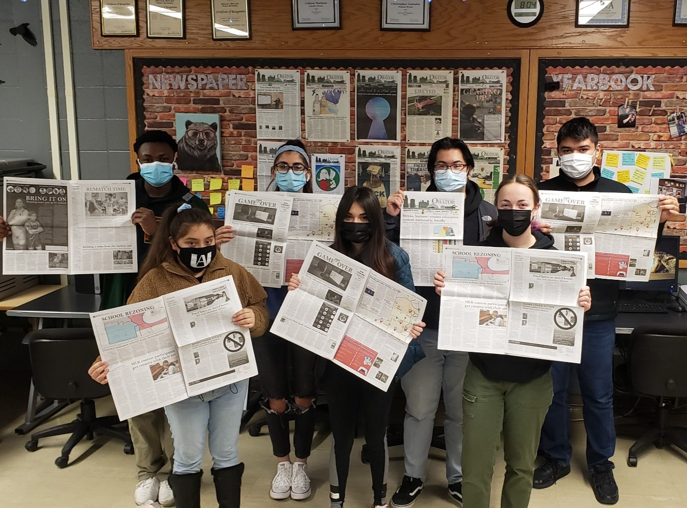
News Stories
This was a once-in-a-lifetime opportunity for a high school journalist to cover an official visit from a federal official. I worked with my school principal and my advisor to secure a spot in the press pool. It was a little bit of a fight because originally a rule was decided that only one person from each of the OPS high schools was allowed to attend. I knew I had to take this opportunity to cover it, so I worked with the school administration and my advisor to get a fellow editor into the room with the Secretary as credentialed press. This story also earned me a Best of SNO award for Excellence in Writing, the second Best of SNO ever to come out of Bryan High.
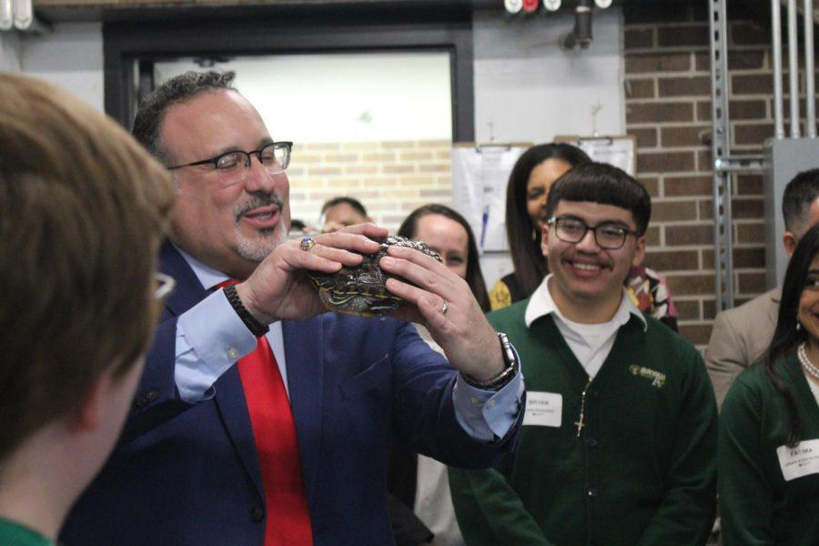
Education Secretary makes his way to Bear CountryThis story had the greatest impact on how I approach my life. I created an anonymous poll to let every staff member at the school express how they felt about burnout during the pandemic without fear of retaliation. The results showed the scope of the issue was massive, and writing it made me appreciate my teachers more.
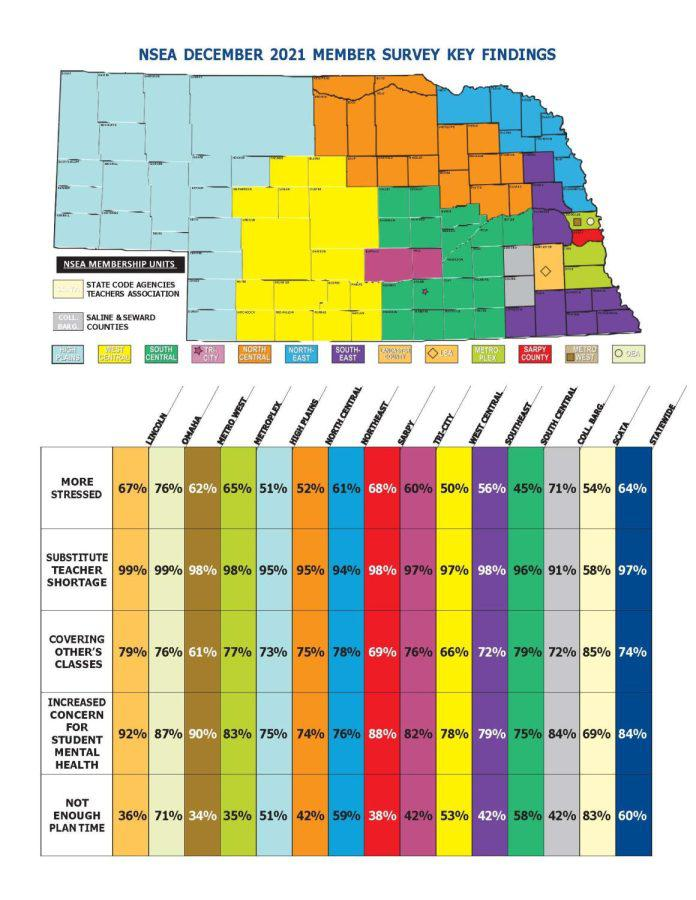
Stress, burnout strains education system nationally, locallyThis was one of the first stories I wrote as an official member of the staff. During storyboarding I noticed #SaveOurChildren trending nationally on social media, so I explored what human trafficking looked like in Nebraska — my first time reporting beyond the school, getting statements from the FBI's Omaha branch, the Omaha Police Department, and the Nebraska Attorney General's Office.
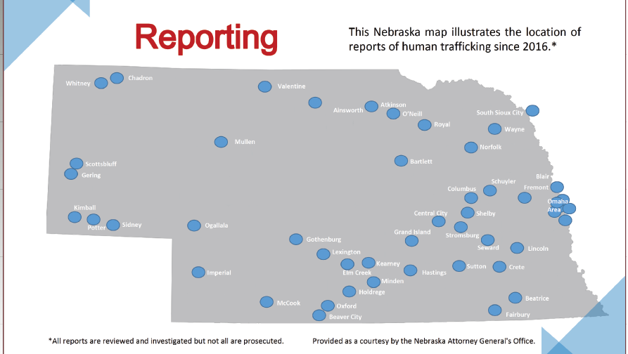
Nebraska officials combat human trafficking across the stateFeature Stories
This story was not on my staff's radar. No one on staff had even been alive during his tenure, but I thought the life of this former principal was worth covering because the school was going to honor him. He was an important figure in the Bryan community for 17 years, and many of our current educators were influenced by his leadership.
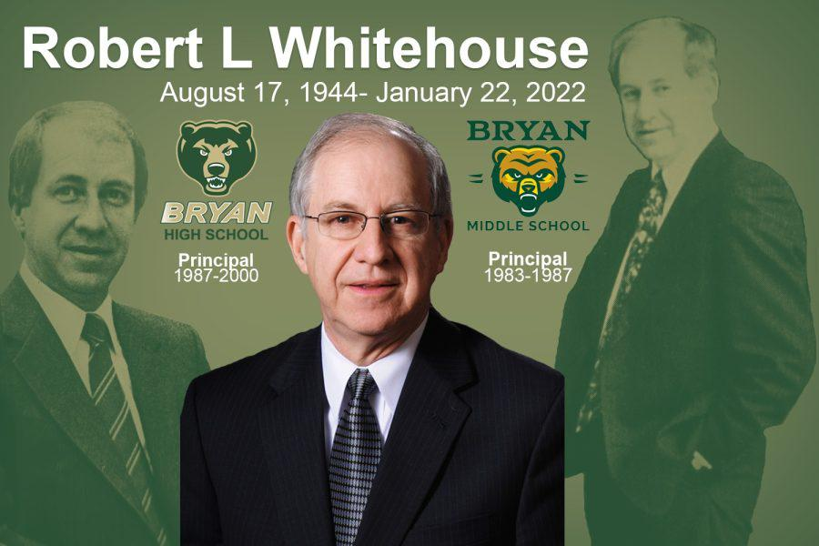
School, community remembers former principal Robert "Bob" WhitehouseI created this story alongside Jada Sandvall and Mahi Jariwala at the AAJA JCamp in the summer of 2022, during our reporting activity in L.A.'s Little Tokyo. We were each covering separate businesses and decided the story would be stronger tied together about the fashion scene and how it relates to the Asian-American experience.
Little Tokyo's Fashion SceneOpinion Writing
This editorial came out of a staff discussion after I saw a school district in Colorado getting rid of its valedictorian title. I brought it up in class, and after researching found that some of our own neighboring school districts were doing the same thing.
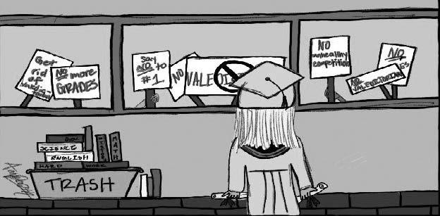
Local schools ditch valedictorian titleThis column was written during my sophomore year as commentary on President Biden's calling for a raise in the national minimum wage. This article qualified me for my first state journalism competition in Newspaper Column Writing, which earned me 7th place.
Raising wages won't solve income inequalityEditing, Leadership & Team Building
I was always considered a leader by my teachers, but taking on an editor position my first year on staff was a little daunting, especially since I was the only new staff member that year. As a Copy Editor during my sophomore year, I worked with the other Copy Editor, Sports Editor and Editor-in-Chief creating layouts and editing each other's spreads. This paid off going into my junior year, when I became Co-Editor-in-Chief with half the staff brand new — I taught these reporters by remembering how the previous editor-in-chief had taught me.
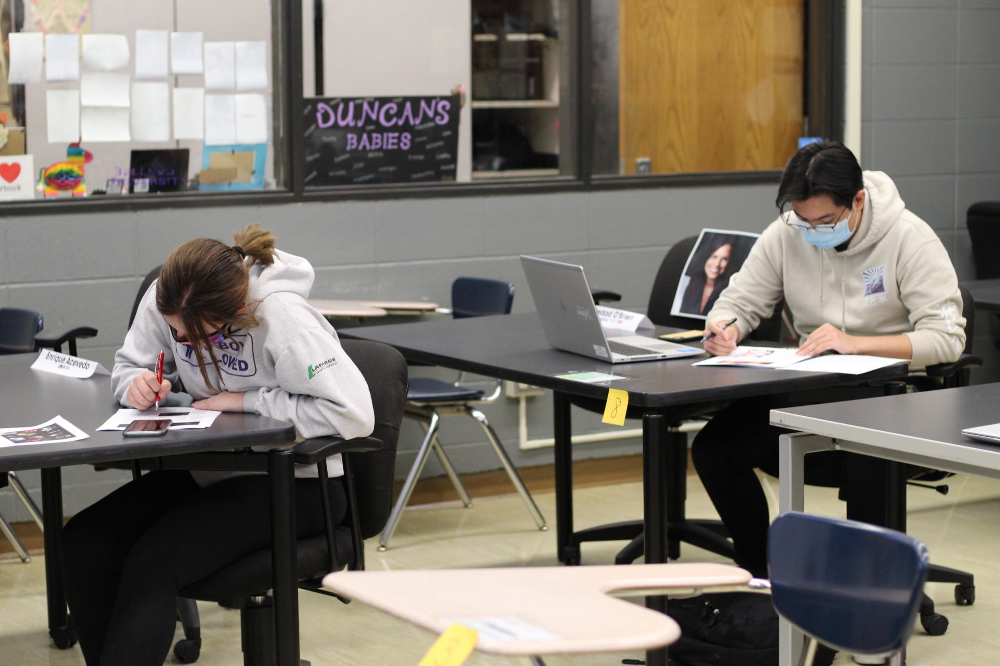
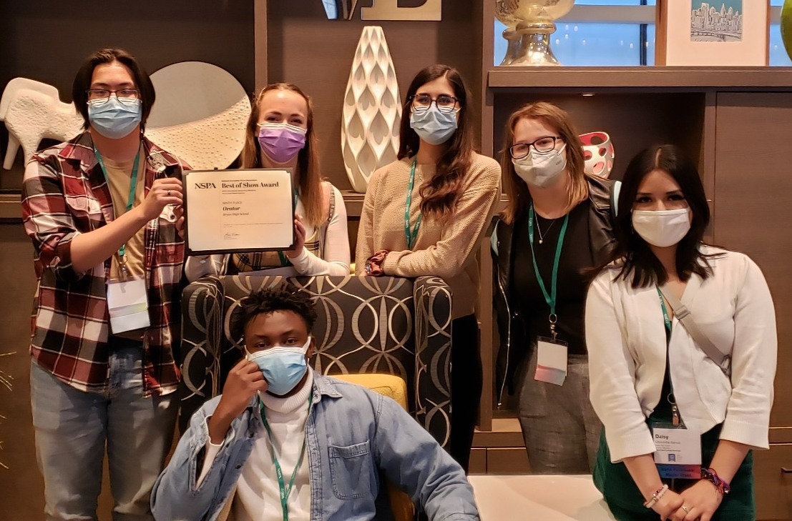
Coaching and Editing
As an editor I wanted my staff to improve, and I found the best way to do it was to work one-on-one with reporters — walking through graphic organizers to find sources and questions to ask. When stories are ready to be edited, the writer uploads their doc to a shared OneDrive folder where I read through and comment, first on content, then on grammar and AP style. I sit down with the writer to explain the comments, then give them time to make the edits themselves rather than doing it for them, so they build the skill of finding their own errors.
Copy Editing
Even with spell check and autocorrect, errors can slip through the cracks. Before we send spreads to the printer, all of the editors come together for a final proof night to catch what the first round of editing missed.
Conventions
I believe what brought our staff together most was traveling. It was one of the few times we were all together that wasn't a late work night spent stressing over a deadline. Being away from some of that stress, just being people together, brought us closer — and these conventions allowed for growth through workshops, too. I've been able to attend three JEA/NSPA National High School Conventions with my staff: exploring Independence Hall in Philadelphia, walking down Hollywood Boulevard in Los Angeles, and visiting the Gateway to the West in St. Louis.
JCamp
I took the summers to further myself as a student journalist. My school paid for my registration to the Nebraska High School Press Association's JCamp in 2021 and 2022, where I took Scott Winter's Editorial Leadership track with editors from across the state. In the summer of 2022 I also attended the AAJA JCamp at the University of Southern California — a week-long, intensive program that pushed me beyond my comfort zone. I heard from industry leaders including L.A. Times Executive Editor Kevin Merida, CBS News correspondent Jamie Yuccas, and CNN Digital's national executive editor Josh Freedom du Lac. I learned from faculty including Washington Post correspondent Arelis R. Hernández, Bloomberg Middle East correspondent Ben Bartenstein, Wall Street Journal photo editor Timmy Huynh, CNN special projects producer Julia M. Chan, Star Tribune entertainment critic Neal Justin, Star Tribune assistant managing editor Kyndell Harkness, ABC7 News anchor Terrell Brown, and Center for Public Integrity CEO Paul Cheung.
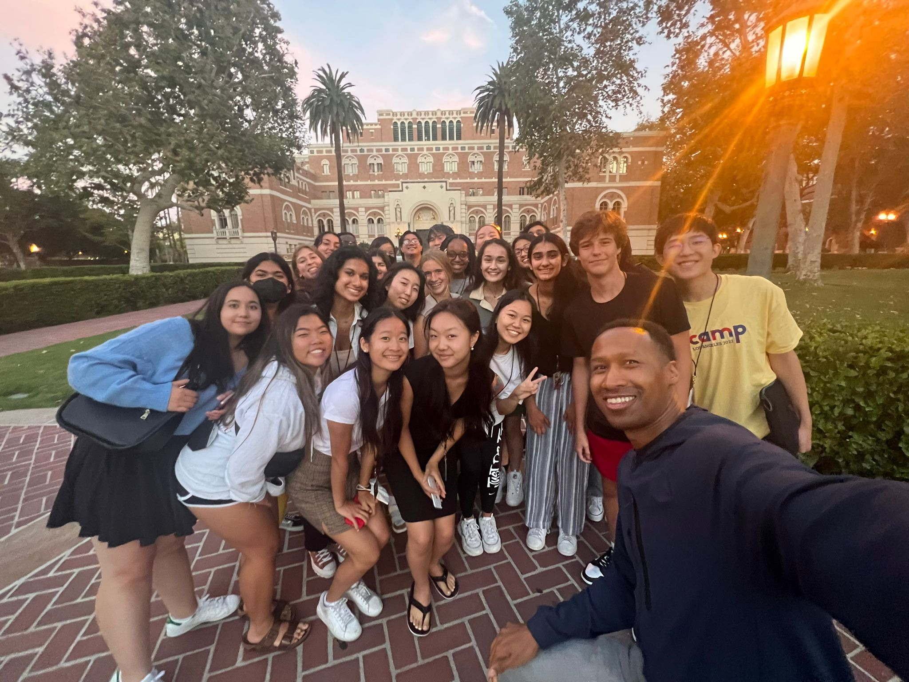
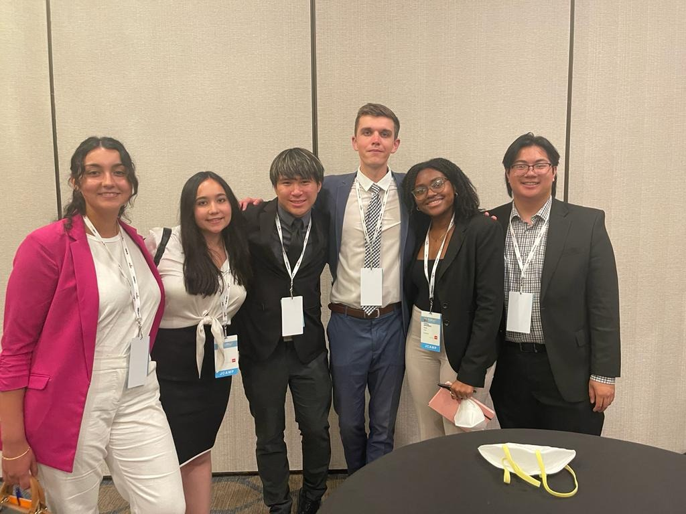
The New Advisor
The hardest part about my time as a student journalist wasn't the late nights or hard-to-reach sources — it was learning that Ranae Duncan, who taught me everything I knew about journalism, was taking a position at a different school. I considered leaving too, but decided I had a responsibility to stay with the program and make sure it survived. Before the new advisor's first school year, I met with her and the yearbook Editor-in-Chief to get to know her and shape the program around a mix of her fresh ideas and my own experience on staff, then met with returning staffers to set expectations that things would be different and we'd have to be okay with change.
Testimonials
Gretchen Baijnauth Bryan High School Journalism Advisor (2022–23)"His leadership doesn't just happen on his newspaper staff. When the yearbook editor-in-chief dropped the class at semester, Justin asked me and the class what help they needed. He has been in the room helping them with stories, design and photos. Often if others are unable to take photos, Justin is the first to volunteer. That willingness to go above and beyond has helped both publications."
Ranae Duncan Bryan High School Journalism Advisor (2010–2022)"Justin has so much initiative, perhaps the most that I've seen a student have in my 13 years in teaching. He is 100% someone I can count on to get the job done and done right. He goes out and gets the story and isn't afraid of contacting whomever he needs to, from the mayor's office to city council. He is punctual, responsible, respectful, an eager learner, determined, and self-sufficient."
Olouwatobi Noukpozounkou The Orator Reporter (2019–20), Section Editor (2020–21), Senior Editor (2021–22)"Justin has been a hard worker that's dedicated to journalism even before he was in newspaper. He always made sure to meet his deadlines and get his work done to his best ability. He'd also help the newer staffers out whenever they couldn't figure out what to do next. He was a very critical member of our staff."
Keyana Burries The Orator Editor-in-Chief (2020–21)"Justin was a very vital member of our newspaper staff. I knew with him on our staff I was passing the newspaper down to someone responsible and reliable. Whenever I needed something done that I couldn't get around to, Justin was always up for the task. He is a hard worker that always gets the job done correctly and timely."
Broadcast Journalism
I was introduced to the broadcast format in early 2020, before the pandemic, in my Journalism 1-2 class. When I joined The Orator staff, our online presence was more of an afterthought — the website was still new and the program remained focused on a print newspaper published once a quarter. Between our third and fourth issues one year, I had a little more time and took it upon myself to produce a video about a new boba shop opening in Papillion. I gathered footage at the grand opening, conducted interviews, wrote the script, and edited it all into a package, then asked a staffer interested in sports broadcasting to do the voiceover — giving her a chance to try a form of broadcasting she might enjoy.
Photojournalism
Photojournalism is how I initially got my foot in the door, volunteering to take photos of cross-country meets my freshman year. That was the first time I picked up a DSLR camera, and I bought my own that fall to keep experimenting. Since then I've photographed a variety of events for both The Orator Newspaper and Crusader Yearbook.
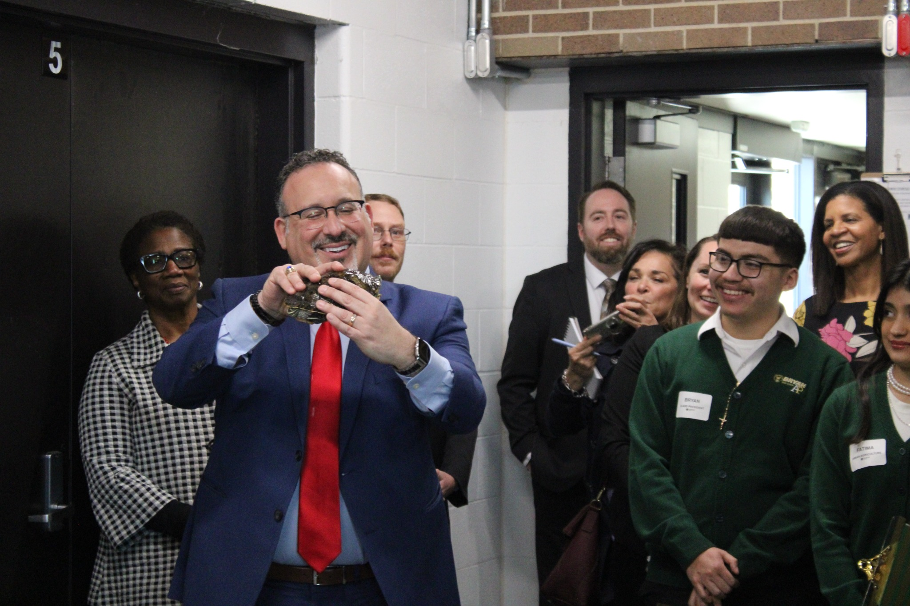
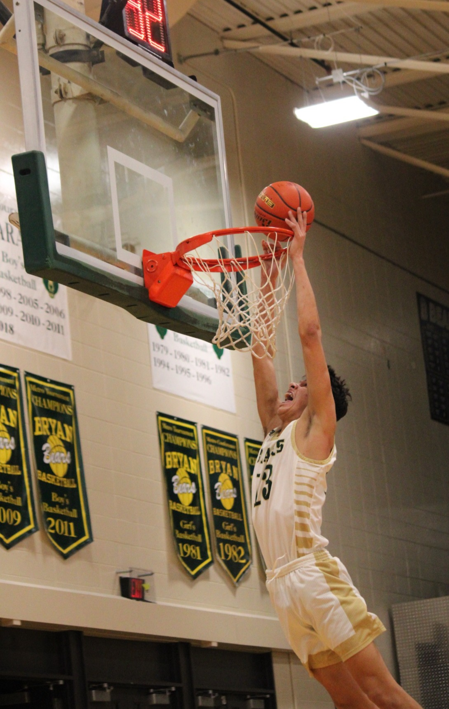
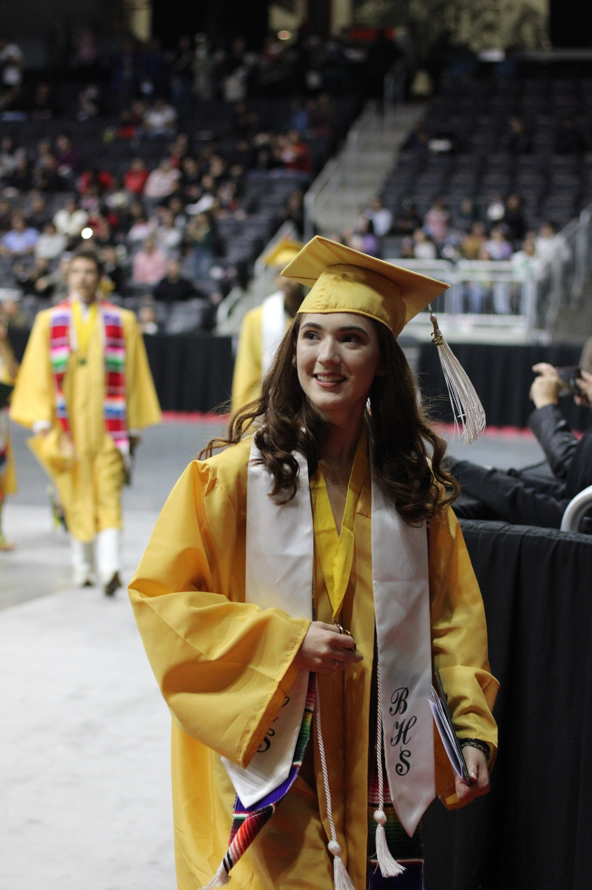
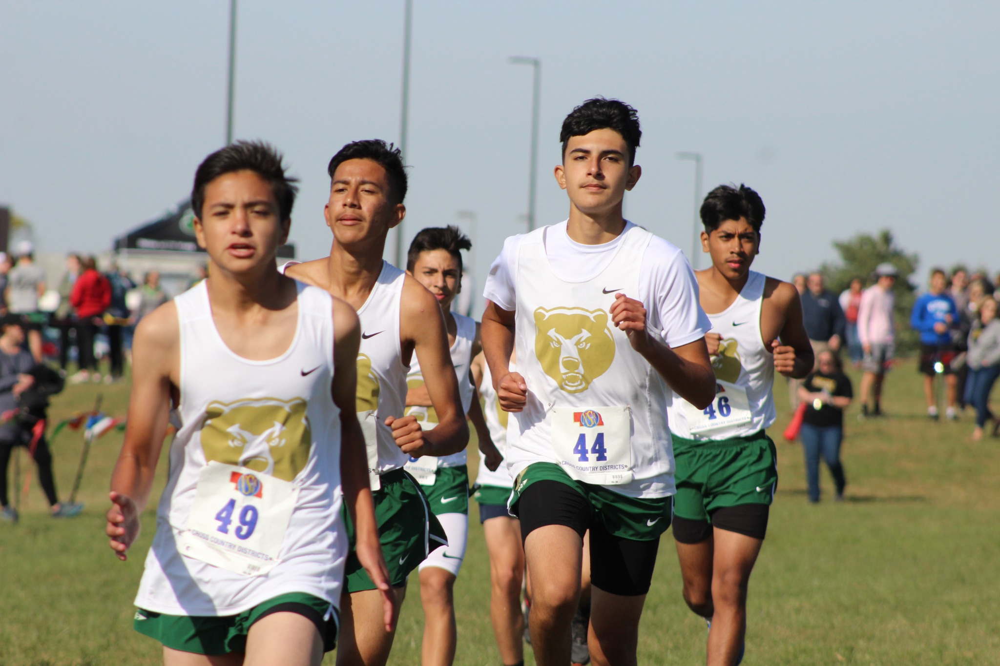
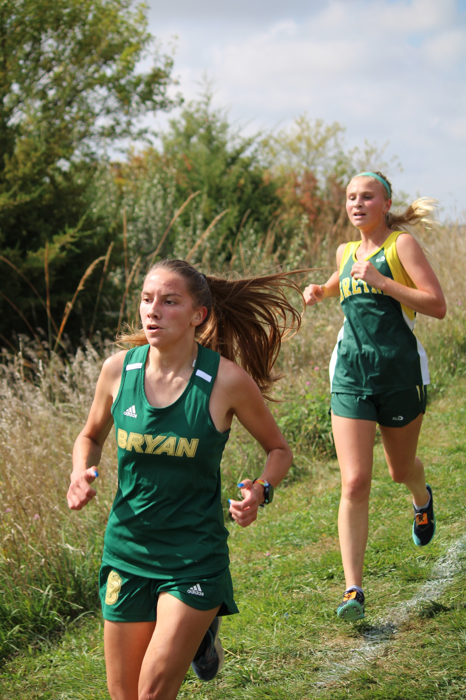
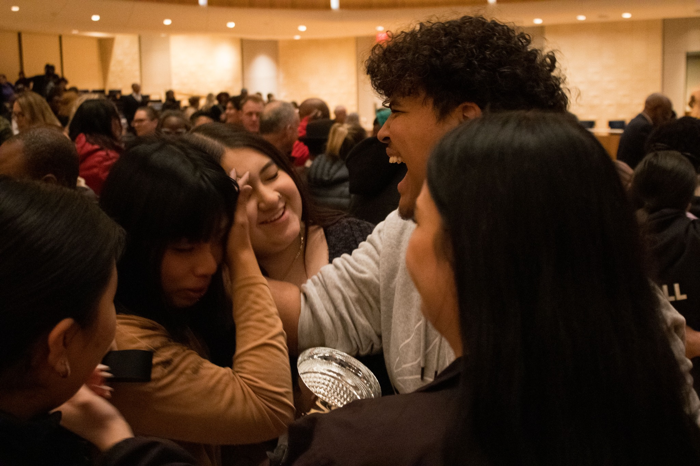
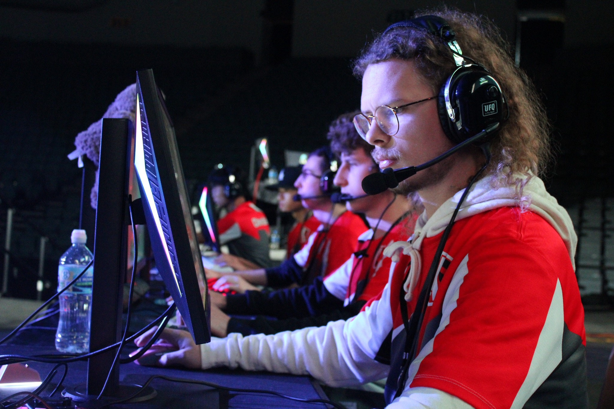
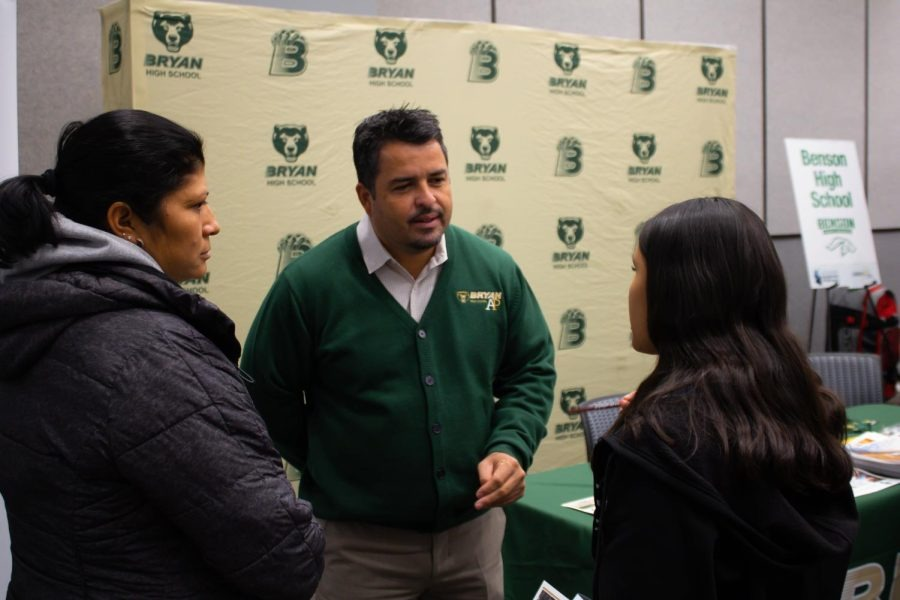
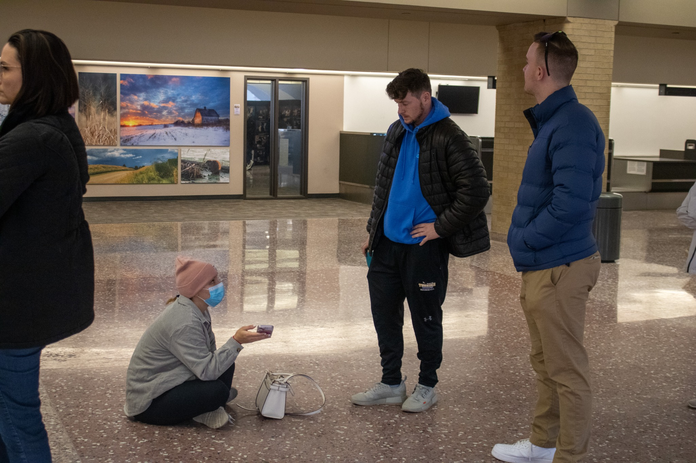
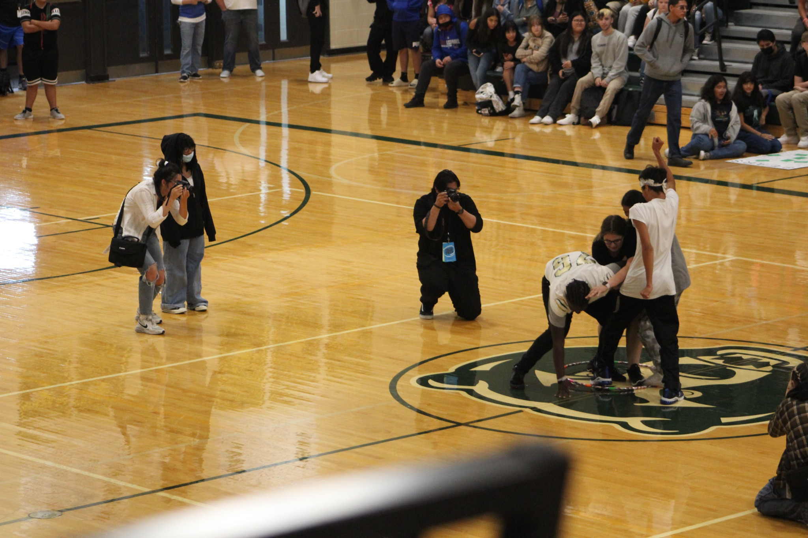
Design
Page layouts I designed for The Orator, Omaha Bryan High School's student newspaper. Click a page to open the full PDF.
Law, Ethics & News Literacy
As a school that practices prior review, everything we publish is required to go through the English curriculum specialist. For the most part censorship wasn't a big issue for us, but naturally we ran into a few issues.
Crime
A shooting occurred over winter break involving students from Omaha Bryan and Omaha South. A reporter wanted to cover it by showing the experience of a student next to the victim, tying it to a recent increase in gun violence within Omaha. During prior review, we were informed litigation and an investigation were pending between the school and the victim's family. We felt the story was still important to tell because it directly affected the South Omaha community, so to get it published we removed all names and left a footnote explaining our decision to readers.
Editorial Disclaimer
While an editorial disclaimer was printed in our newspaper on the opinions page, nothing on our website specified the official description of our opinion stories. That caused an issue when one of my staffers wrote a review on Dahmer — Monster: The Jeffrey Dahmer Story. Some readers were upset, believing the school was advertising the already-controversial show, even though the review itself was critical of it. After meeting with my advisor and the writer, I decided a direct response wouldn't do much good, but I did add our editorial disclaimer to the About page of The Orator's website and a disclaimer at the end of each editorial, column and review published, to make clear whose opinion the story represents and to separate The Orator's content from Bryan High School.
The Orator does not make any guarantees about the completeness, reliability and accuracy of this information. Any action you take upon the information you find on this website (BHS Orator) is strictly at your own risk. Unsigned editorials are the opinions of The Orator Staff and do not necessarily represent the opinion of Bryan High School. Signed editorials are the opinions of the author alone and do not necessarily represent the opinions of Bryan High School or The Orator Staff.
Commitment to Diversity
Diversity is very important to our coverage in The Orator, especially since our student body is diverse. The racial demographics of Bryan High break down to:
- Hispanic/Latino 68.10%
- White 13.50%
- Black or African American 12.6%
- Two or More Races 3.30%
- Asian or Pacific Islander 1.70%
- American Indian or Alaska Native 0.90%
All three years I've been on staff, The Orator's makeup has been very diverse, and I've continued to ensure the newsroom was a safe place for staff members to share anything they feel. I was shown the importance of diversity when I attended the AAJA JCamp in the summer of 2022, where I heard from industry leaders about the lack of diversity in the industry — often being the only person of color in the newsroom, unable to fully express themselves because of it.
Examples of Diversity in My Work
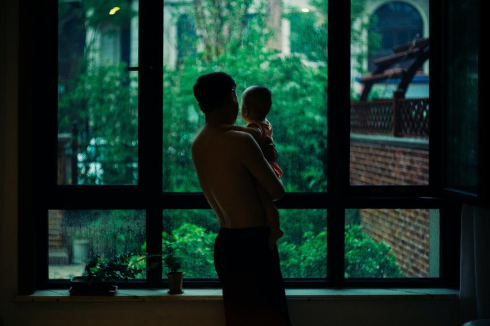
What the Surge in Anti-Asian Hate Crimes Means to Asian Americans in OmahaLocalizing a National Issue
Gender identity within schools is a controversial topic. When the Nebraska Attorney General joined a lawsuit with 19 other states over anti-discrimination laws about gender identity, instead of writing a straight news story I took a more analytical approach and surveyed how public school districts around my community handled the issue — finding a wide spectrum, from no formal policy at all to Gretna's parental-consent requirement on one end and Omaha Public Schools' and Bellevue Public Schools' practice of using students' preferred names and pronouns on the other.
Marketing & Audience Engagement
The work we do as journalists doesn't matter if nobody reads it. It's important to make sure our student body knows when content has been produced — especially since The Orator has at times been an online-only publication. Our main focus for marketing is our own social media, as well as Bryan High's social media accounts. I reach out to the school's social media team to periodically reshare our content, and notify staff members when stories are posted so they can reshare on their own accounts. Facebook remains our platform with the most followers and engagement, often drawing comments from students, alumni, staff and parents.
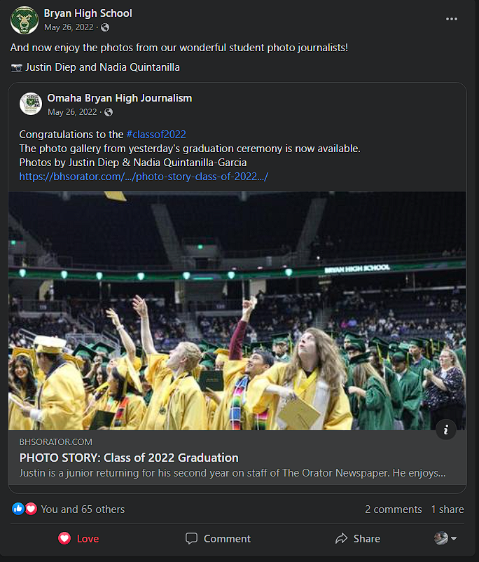
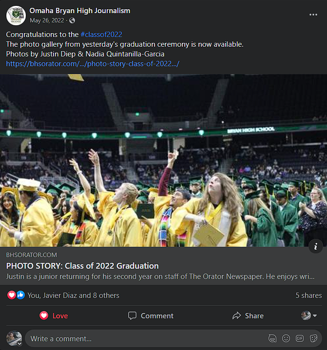
In previous years when we produced a print newspaper, distribution was up to the staff. Once notified the paper had arrived, editors and reporters would count it into stacks of 15–20, then pairs of staffers delivered a stack to each classroom, stocking extras onto stands in the journalism classroom, library and front office. The student body was receptive — after distribution, kids could be seen reading it in every classroom, and I overheard students and staff discussing our stories in the hallway.
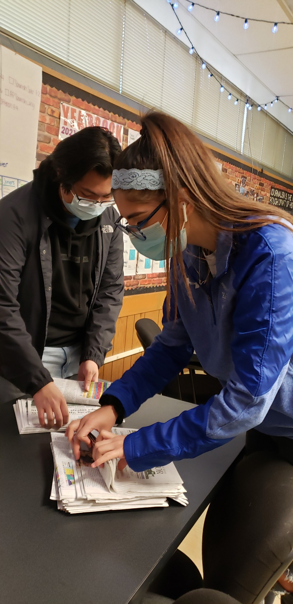